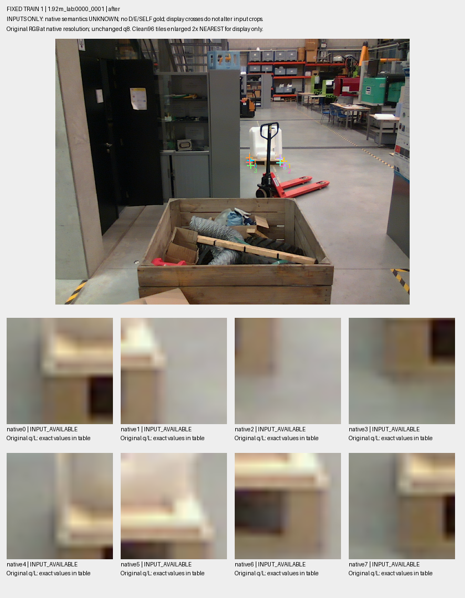
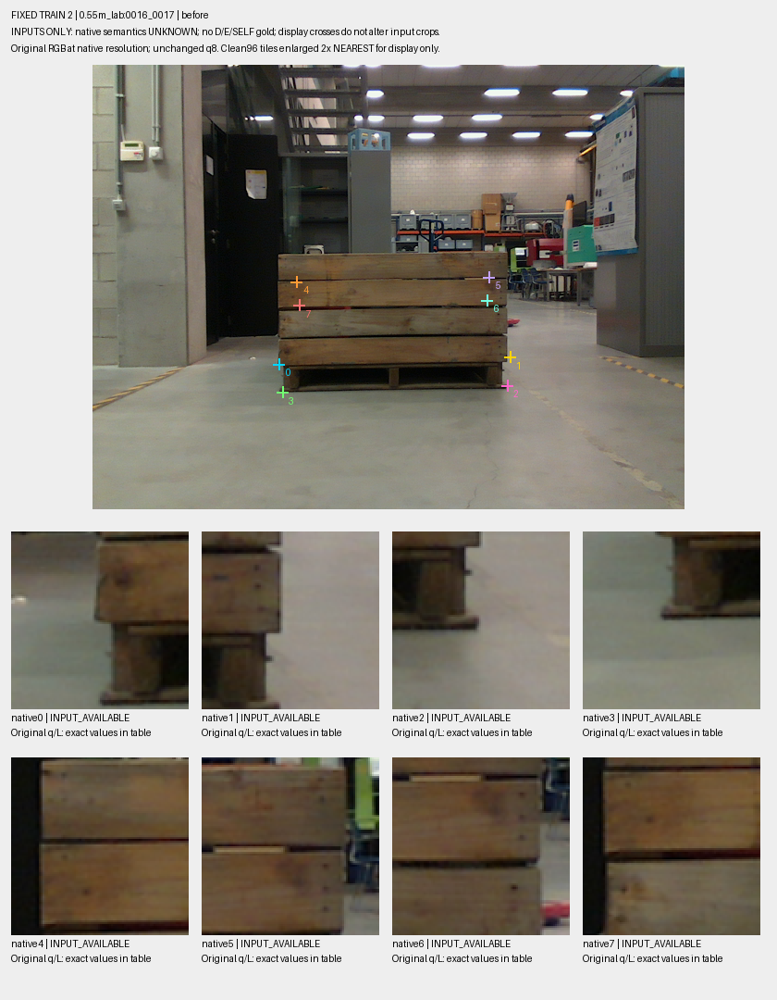
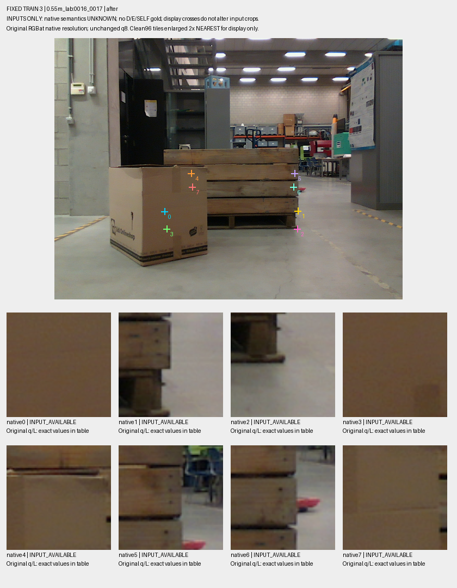

Native semantics UNKNOWN; original q/L/U retained. This is input inspection, no visibility gold, certificate, model output or selection.
all32 input table | metadata and pixel hashes | overview


